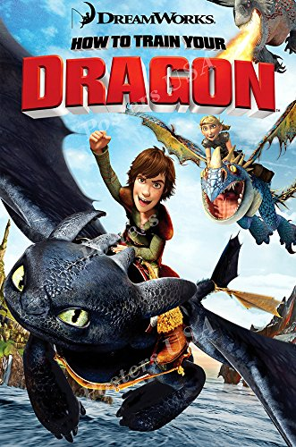
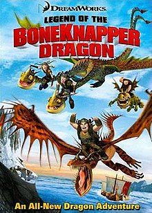
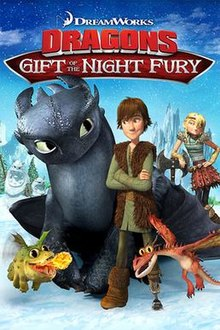
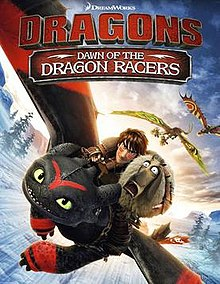
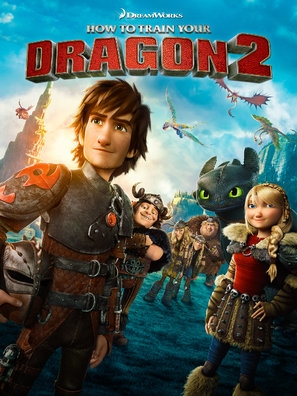
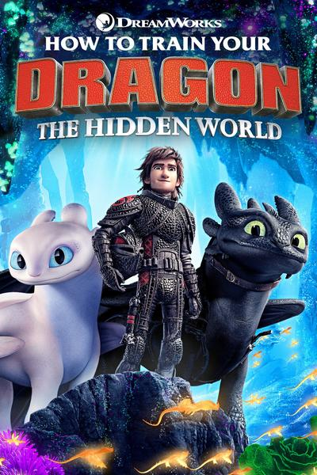
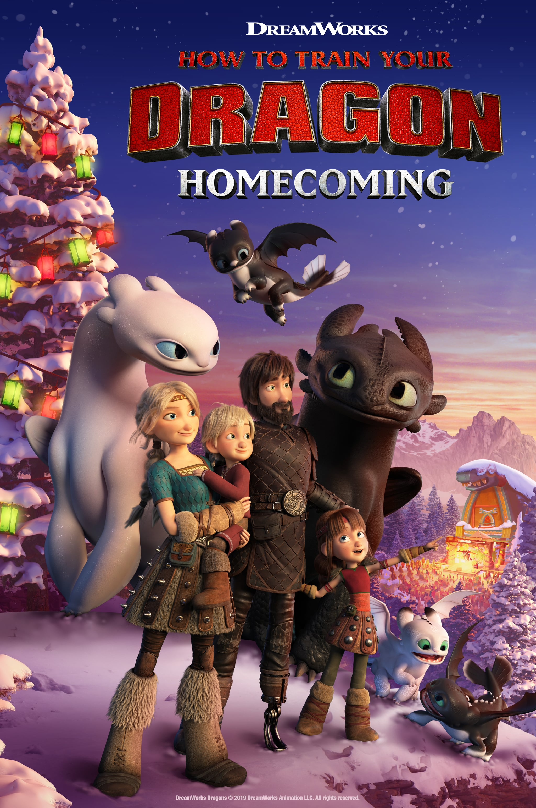

This page containes spoilers about How to Train Your Dragon.
Movies and Shorts
This is all of the movies and shorts as far as I know.
How to Train Your Dragon
How to Train Your Dragon follows the story of Hiccup as he changes the mind of his entire village about dragons with Toothless.
Legend of the Boneknapper Dragon
In the Legend of the Boneknapper Dragon, Gobber goes after a dragon that he did not realize that he had stole something from when he was younger.
Book Of Dragons
In Book Of Dragons, the story of Bork the Bold is told and it goes through information about the different dragons.

Dragons: Gift of the Night Fury
In Gift of the Night Fury, it is Christmas time on Berk and all the dragons leave to nest.
Dragons: Dawn of the Dragon Racers
In Dragons: Dawn of the Dragon Racers, the riders come up with a new sport where they hunt for sheep around Berk.
How to Train Your Dragon 2
In How to Train Your Dragon 2, Hiccup's family is reunited and they find new dragons.
How to Train Your Dragon: The Hidden World
In How to Train Your Dragon: The Hidden World, the dragon riders are releasing more dragons and giving them a safe place to live on Berk.
How to Train Your Dragon Homecoming
How to Train Your Dragon Homecoming takes place after the end of How to Train Your Dragon 3. It is a Christmas special.
